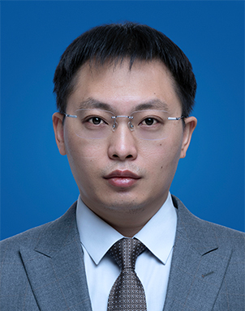
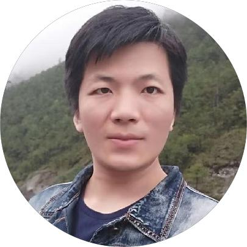
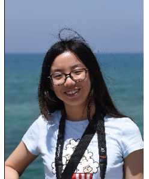
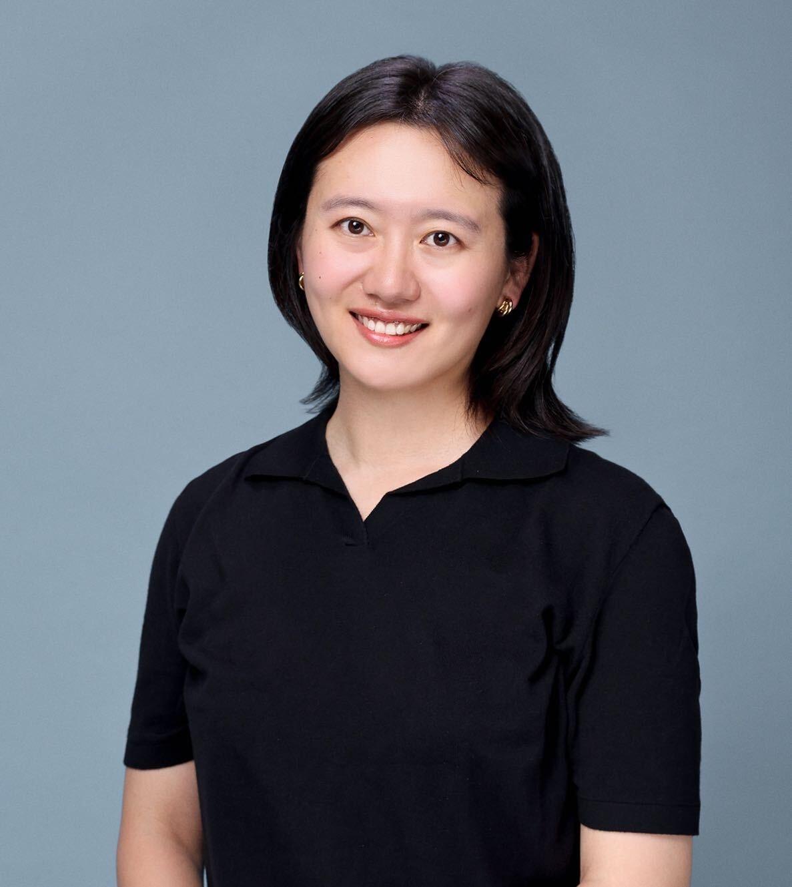
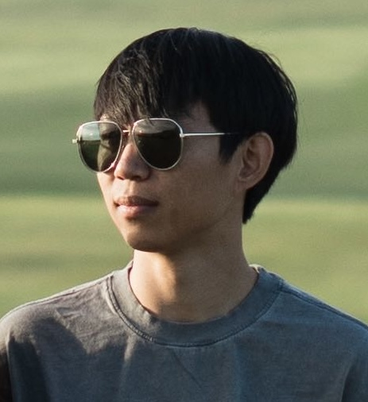
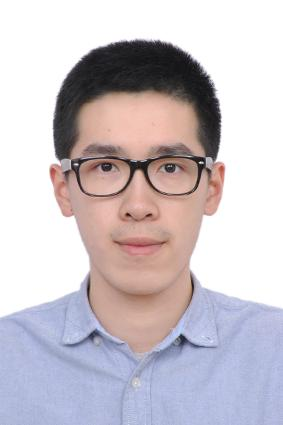
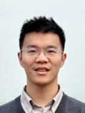
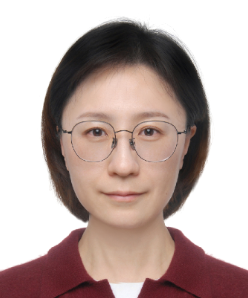
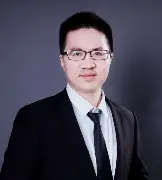

穆太江
清华大学计算机科学与技术系副研究员
主要研究方向为计算机图形学、计算机视觉，近年来重点关注三维重建与理解、视觉内容生成等图形学与人工智能交叉问题。长期在清华大学计算机系从事计算机图形学相关科研与教学工作。在重要国际会议和期刊发表论文40余篇，其中3篇论文入选ESI热点论文。主持了自然科学基金委青年科学基金项目和北京市科技计划项目任务，作为骨干参与了多项国家重大项目。现担任中国计算机学会计算机辅助设计与图形学专委会委员，VCIBA期刊青年编委等。

王鹏帅
北京大学王选计算机研究所助理教授、博士生导师
现任北京大学助理教授、博士生导师，研究方向为计算机图形学、三维深度学习和几何处理。长期关注三维几何数据的表示、理解与生成，围绕点云、网格等复杂三维数据开展数据驱动的建模与智能几何计算研究。在图形学、视觉学术会议SIGGRAPH（ASIA）、CVPR、ICCV等上发表多篇论文。担任图形学学术会议SIGGRAPH Asia 2024、EuroGraphics 2024、CVM 2023/2024程序委员，图形学期刊Computers & Graphics副主编。于2023年获得AsiaGraphics 青年学者奖。

黄相如
西湖大学助理教授
1991年生，于高中参与国家信息学竞赛（NOI）并保送上海交通大学ACM试点班。本科毕业后赴美国得克萨斯奥斯汀分校攻读计算机科学博士，研究方向为三维数据处理，并于2020年获得博士学位。之后加入麻省理工大学计算机科学与人工智能实验室（CSAIL），并致力于三维大数据的处理，三维感知和三维人工智能生成（AIGC）算法的研发。目前全职在西湖大学担任助理教授，并继续相关方向的研究。

李曼祎
山东大学副教授
研究领域涉及计算机图形学、三维视觉、人工智能等，主要关注基于数据驱动的三维模型理解与内容生成，如三维模型的语义理解和表征学习、室内场景的设计与建模、基于图像或点云的三维重建与生成等。目前已在计算机图形学、计算机视觉等领域CCF-A类及权威期刊和会议发表论文多篇，参与项目包括加拿大NRC-IRAP、Mitacs Acceleration、国家自然科学基金面上项目等，担任Siggraph、TOG、TVCG、CVPR、ECCV等国际顶级会议或期刊审稿人。获得2022年ACM济南分会新星奖，以及山东大学未来计划、山东省优秀青年科学基金（海外）、国家自然科学基金青年项目等资助。

李伟
上海交通大学计算机学院约翰·霍普克罗夫特计算机科学中心长聘教轨副教授
现任上海交通大学计算机学院约翰·霍普克罗夫特计算机科学中心长聘教轨副教授，上海市浦江人才。 他的主要研究方向集中在计算机图形学、物理仿真以及基于物理的人工智能。 其具体研究领域包括高性能格子玻尔兹曼方法（LBM）、复杂物理现象的建模与仿真、基于物理的机器人学习，以及面向具身智能任务的高性能物理仿真引擎。 他的研究工作不仅成功落地于游戏引擎与视觉特效制作，还在虚拟环境下的智能机器人学习、工程软件开发等领域取得了实际应用成果。 他已在计算机图形学顶级期刊 ACM Transactions on Graphics (TOG) 上发表论文多篇，论文多次入选SIGGRAPH technical paper trailer。 此外，他还在计算流体力学领域的权威期刊 Journal of Computational Physics和 Physics of Fluids上发表相关研究成果。
楚梦渝
北京大学智能学院助理教授
北京大学助理教授、博雅青年学者，国家级青年人才。2020年获慕尼黑工业大学最优等博士学位，曾获马克斯普朗克研究所莉泽·迈特纳研究金。研究方向为融合深度学习的物理仿真，近期聚焦虚实融合场景的物理动态，围绕神经表达，研究起火降雨等仿真，于SIGGRAPH、CVPR发表论文，担任SCA 2026程序主席及SIGGRAPH Asia等国际会议程序委员。

过洁
南京大学计算机学院、计算机软件新技术全国重点实验室长聘副教授（特聘研究员）、博导
主要研究方向为图形渲染技术和虚拟现实技术。迄今为止，在国内外主流期刊和会议上发表高水平学术论文100多篇，包括SIGGRAPH、CVPR、ICCV、ACM TOG、IEEE TVCG等。近年来带领团队研制国产真实感渲染引擎Moer Renderer（获CCF CAD&CG专委2024年度优秀图形开源软件奖）和国产实时渲染引擎MoerEngine。相关研究成果深入应用在文物保护、基础教育、消费电子和影视娱乐等多个行业。过洁担任包括SIGGRAPH Asia在内的多个国际、国内学术会议的程序委员会委员，曾获得华为火花奖、江苏省工程师学会优秀青年工程师奖、江苏省计算机学会青年科技奖等奖励。

朱君秋
山东大学研究员
研究方向是真实感渲染，主要关注神经外观建模，移动端高效真实神经渲染。曾获齐鲁优秀青年，山东大学浩然学者，博后引才专项等荣誉。担任2026年 Euroraphics 多样性主席。担任2024年SGP会议研究生学院特邀讲师和2024年SIGGRAPH Asia课程讲师。发表20余篇高水平期刊会议论文（Tog，siggraph，cgf等），关注工业应用，相关研究成功应用于Meta，Weta，Chaos 等公司。

徐英豪
香港科技大学（HKUST）计算机科学与工程系助理教授
此前，他是斯坦福大学计算成像实验室的博士后研究员，师从Gordon Wetzstein教授。他在香港中文大学获得博士学位，师从周博磊教授和林达华教授，并在浙江大学信息工程系获得学士学位。本科期间，曾在加州大学圣地亚哥分校担任访问学生，导师为苏昊教授。研究重点为三维计算机视觉、计算机图形学和生成式人工智能交叉领域。已在CVPR、ICCV、ECCV、SIGGRAPH、SIGGRAPH Asia、ICLR、NeurIPS和ICML等顶级会议发表多篇论文，多次入选Oral或Spotlight presentations，其中一篇论文被提名为2022年CVPR Best Paper Candidate。2024年被评为WAIC Rising Star，2022年获得Snap Fellowship提名。

顾家远
上海科技大学信息科学与技术学院助理教授、研究员、博士生导师
顾家远博士2018年于北京大学信息科学技术学院智能科学系获得本科学位，并于2024年在美国加州大学圣地亚哥分校计算机科学与工程学院获得博士学位。他曾在Uber ATG、Waymo、Facebook AI、Qualcomm AI、Google DeepMind等机构担任实习或学生研究员。2024年7月顾家远博士加入上海科技大学信息科学与技术学院担任助理教授、研究员、博士生导师。他的研究方向包括具身智能(Embodied AI)、三维视觉、机器人操作。

陈思明
复旦大学大数据学院青年研究员，博士生导师
复旦大学可视分析与智能决策研究组负责人。上海市高层次引进人才。2011年本科毕业于复旦大学，2017年获得北京大学博士学位，之后在德国波恩大学任博士后研究员，以及德国弗劳恩霍夫智能分析和信息系统研究所（Fraunhofer IAIS）任研究科学家（2017-2020）。其研究成果发表在在IEEE TVCG, CGF, IEEE VIS和ACM CHI等顶级期刊和会议上，并担任多个国际会议的程序主席、组织委员会成员。其工作曾获得多次IEEE VAST Challenge数据挑战赛一等奖，以及多个会议最佳论文/海报（提名）奖，包括IEEE VIS最佳海报提名奖、EuroVA最佳论文奖、Agile最佳海报奖、ChinaVis最佳论文奖等。

彭思达
浙江大学软件学院"百人计划"研究员，博士生导师
研究方向为三维计算机视觉和计算机图形学。至今在TPAMI、CVPR、ICCV等期刊或会议发表六十余篇论文，谷歌学术引用7100余次，其中一篇一作论文获得CVPR最佳论文提名，成果获得GitHub数万次stars和2024年中国CCF图形开源软件奖；入选China3DV 2025年度杰出青年学者、斯坦福2024全球Top 2%科学家榜单、2024年中国计算机学会优博（国内计算机领域评选十人）；被苹果公司评为2022 Apple Scholar（亚太地区唯一），被华为公司评为2024启真优秀青年学者。

曾琼
山东大学计算机科学与技术学院教授、博士生导师
国家级一流本科课程负责人，计算机系副主任、泰山学堂计算机取向教授小组成员。研究方向为科学数据可视分析、计算机图形学、人机交互，目前主要关注大规模海洋科学数据可视化及交互方面的研究。在ACM CHI、IEEE VIS、IEEE TVCG等国内外重要期刊及会议发表论文20余篇，授权专利10余项。主持国家自然科学基金2项、国家重点研发计划项目子课题2项、省部级纵向及企业横向合作项目4项。担任中国计算机学会青岛分部执委委员、智能机器人专委会执委委员、计算机辅助设计与图形学专委会执委委员，中国图象图形学学会可视化与可视分析专委会委员、人机交互专委会委员，中国工业与应用数学学会几何设计与计算专委会委员，中国人工智能学会元宇宙技术专委会委员；担任SIGGRAPH、IEEE TVCG、IEEE VIS、ACM CHI、Graphics Interface、PacificVis、ChinaVIS等国内外期刊及会议审稿人、程序委员会委员等职务。入选山东大学"青年学者未来计划"，荣获省级教学成果奖一等奖、IEEE VIS科学可视化挑战赛冠军奖、全国混合教学创新设计大赛优胜奖、省级教学创新比赛三等奖、中国机器人学术年会最佳论文奖等教学及科研奖励。

蒋才桂
西安交通大学人工智能学院教授、博士生导师，国家级青年人才
西安交通大学"小米青年学者"。分别于2008年和2011年在西安交通大学获得电子科学与技术专业学士和控制科学与工程硕士学位，2016年获得沙特阿卜杜拉国王科技大学（KAUST）计算机科学博士学位，2016年至2018年在德国马普计算机研究所（Max Planck Institute for Informatics）从事博士后研究工作，2018年在美国加州伯克利大学国际计算机研究中心（ICSI,UC Berkeley）担任研究科学家，2019年至2021年在KAUST可视计算中心担任研究科学家，2021年底至今，任职于西安交通大学。主要研究方向为计算机图形学、3D几何处理、计算机视觉与机器人技术。在计算机图形学领域顶级期刊和会议SIGGRAPH、SIGGRAPH Aisa，ACM TOG上发表学术论文多篇。主持国家重点研发课题、国家自然科学基金优青（海外）等多个国家级和省部级项目。

吕琳
山东大学计算机科学与技术学院教授
研究方向为计算机图形学、面向智能制造的几何计算，在ACM TOG、IEEE TVCG等期刊发表论文百余篇，获授权国家发明专利四十余项并转化应用六项。研发的核心算法集成于国产云CAD平台，并应用于航空发动机等国家重大装备核心部件自主研制。主持联合基金重点项目、面上项目等5项国家自然科学基金；获陆增镛CAD&CG高科技奖二等奖、国际实体与物理造型会议（SPM2020）最佳论文一等奖、山东省自然科学一等奖、吴文俊人工智能自然科学奖二等奖等；担任ICXR 2026、GDC 2024、GMP 2020等程序委员会共同主席，IEEE TVCG、《计算机辅助设计与图形学学报》、《Advanced Manufacturing》等期刊编委。